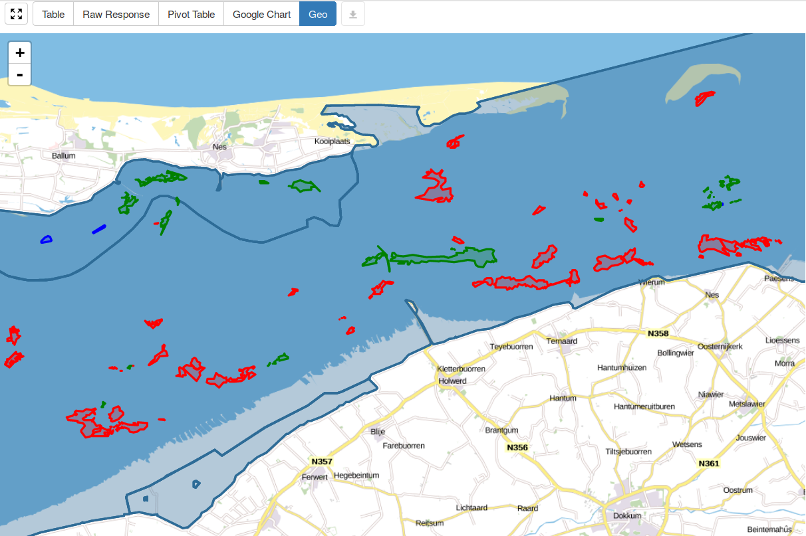

High5 3D Linked Geodata

Zoek pand
RVO Energielabels 🗲
Monumenten ⛪
KvK 🏬
CBS Wijken & Buurten
{kind=link}
Linked Geodata Representation
Simple example

Simple example + implied type information

Complex example

2D ánd 3D
WKT ánd GML
WGS84 ánd RD
Simple example in Turtle
prefix geo: <http://www.opengis.net/ont/geosparql#>
_:deBrug geo:hasGeometry [ geo:asWKT "MultiPolygon (((…)))"^^geo:wktLiteral ] .
Complex example in Turtle
prefix geo: <http://www.opengis.net/ont/geosparql#>
_:deBrug
geo:hasDefaultGeometry [
geo:asGML """<gml:Polygon xmlns:gml="http://www.opengis.net/ont/gml">…</gml:Polygon>"""^^geo:gmlLiteral ;
geo:asWKT "Polygon ((…))"^^geo:wktLiteral ;
geo:dimension "3"^^xsd:integer
] ;
geo:hasGeometry [
geo:asGML """<gml:Polygon srsName="http://www.opengis.net/def/crs/OGC/1.3/EPSG:28992" xmlns:gml="http://www.opengis.net/ont/gml">…</gml:Polygon>"""^^geo:gmlLiteral ;
geo:asWKT "<http://www.opengis.net/def/crs/OGC/1.3/EPSG:28992> Polygon ((…))"^^geo:wktLiteral ;
geo:dimension "3"^^xsd:integer
] .
Querying
The data can be queried using GeoSPARQL and (regular) SPARQL.
GeoSPARQL queries can be sent
to https://data.labs.pdok.nl/sparql
using either of the
three SPARQL
1.1 Protocol approaches:
- HTTP GET
- HTTP POST with regular body
- HTTP POST with URL-encoded body
Based on the HTTP Accept header, results
are returned in either of the following SPARQL result
set formats:
Visualization
2D Map
{kind=link}
3D Map
TBD
Thank you!
Kadaster Data
Platform: data.pdok.nl
Kadaster Labs
Environment: data.labs.pdok.nl